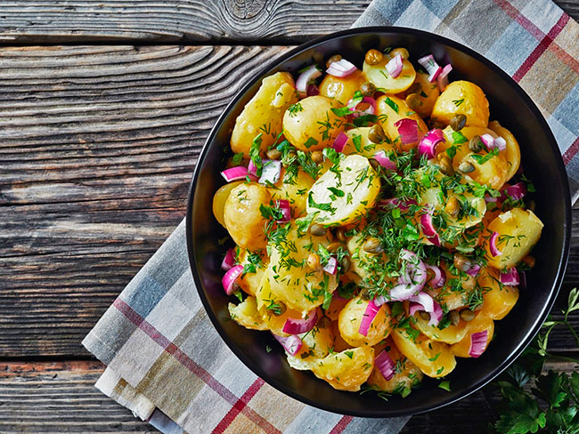

Французский картофельный салат с красным луком
Порции: 4
Время подготовки: 15мин
Пассивное время: 20мин
Ингредиенты
1) 600 гр. Картофель / небольшие клубни
2) 1 шт. Красный репчатый лук / крупная луковица
3) 1 ст.л. Каперсы
4) 1 ст.л. Горчица с зернами
5) 3 ст.л. Яблочный уксус / 5-6%
6) 6 ст.л. Оливковое масло
7) ½ пучок Укроп / небольшой пучок
8) ½ пучок Петрушка / небольшой пучок
9) ¾ ч.л. Смесь 5 перцев / горошком
10) по вкусу Соль
Процесс приготовления
1. Картофель вымыть с щеткой и варить в мундире в большой кастрюле с кипящей
подсоленной водой в течение 20 минут. Слить воду и дать картофелю немного остыть.
2. Картошку очистить, нарезать кусочками. Выложить их в сервировочное блюдо или салатник.
3. Очистить красный лук и нарезать его мелкими кусочками и нарежьте кусочками.
Выложить лук в салатник на картофель.
4. Горошины 5 перцев растолочь в ступке.
5. В небольшую плошку положить ложку французской горчицы с зернами, добавить
3 столовые ложки яблочного уксуса, посолить и всыпать перец. Добавить 5-6 столовых ложек
оливкового масла и взбить заправку для салата до однородной эмульсии.
6. Петрушку и укроп мелко нарезать и добавить в салатник.
7. Перед подачей полить французский картофельный салат заправкой,
при необходимости посолить и поперчить, аккуратно перемешать и подать на стол.
8. Хотя салат можно подавать холодным, гораздо лучше, если будет теплым.
Его можно подавать как дополнение к остаткам мяса, как закуску или как основное блюдо.
В этом случае добавьте яйца вкрутую, копченую сельдь или филе анчоусов.